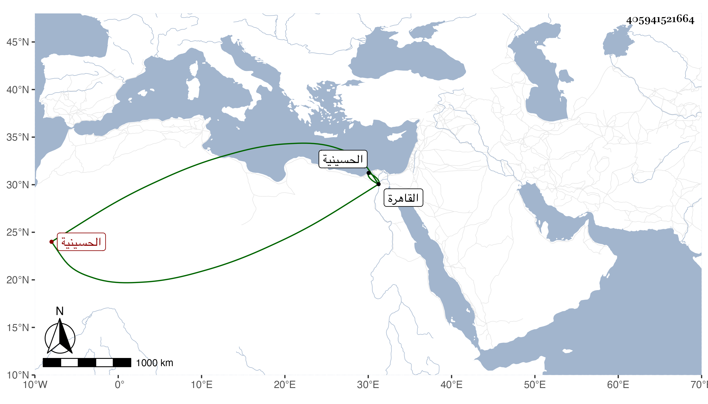

0902Sakhawi.DawLamic.ITO20230111-ara1.EIS1600.405941521664
Biography ID: 405941521664
إبراهيم الغنام رجل في نواحي الحسينية من القاهرة معتقد للخاصة والعامة مشهور بالصلاح . مات هناك وقد عمر في يوم الخميس مستهل ربيع الآخر سنة سبعين وصلى عليه الشرف المناوي على باب جامع الأنور عند خان السبيل من الحسينية في جمع حافل ورجعوا به إلى منزله فدفن في قبر أعده له هناك في حياته وكنت ممن رآه وهو يسوق غنم المعزى ويبيع لبنها ودعا لي رحمه الله ونفعنا ببركاته . قلت لا شك في صلاحه وقد رأيته مالا أحصيه كثرة لكون مسكنه بالقرب من الخطة التي بها محل سكني وكان كثير المحبة لي والإقبال علي بحيث أني كلما اجتمعت به يبادر بالدعاء لي مع مزيد البشاشة وإيناسه بالحديث معي وتبسم وقد عادت علي نفحاته وبركاته ونفعني دعاؤه وكنت أصلي معه الجمعة غالبا بجامع الأنور وأستأنس بجلوسي معه رغبة في دعائه واغتناما لرؤيته وكان يقال أنه صاحب الوقت بحيث أن الشيخ إبراهيم المتبولي كان حين نزوله بظاهر الحسينية يجتمع به كما سبق في ترجمته وما علمت تردده لأحد من بني الدنيا ولا قبوله من أحد شيئا مع التواضع والسكوت وتلطف معي مرة بعد صلاتي بجانبه عيد الأضحى في قضية فاعتذرت له بما يمنعني من فعلها فقبل عذري وقال راحتك عندي مقدمة على السائل فيها أو نحوه وكان يترحم على والدي حين اجتماعي به وربما أثنى علي فأسر بذلك رحمه الله تعالى وأعاد علي من بركته والله تعالى أعلم .
